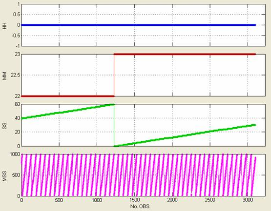
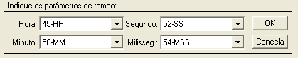
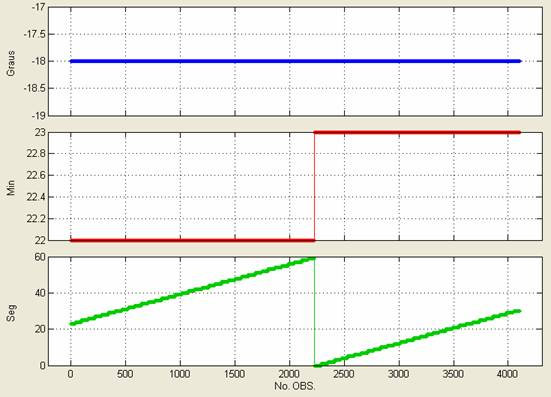
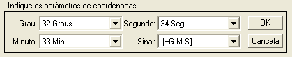

| Menu Funções |
|
Composição
de Parâmetros
O R_DAT possui
três funções que combinam os componentes de
um parâmetro em um único parâmetro:
Composição
de Tempo
Essa função é
usada para combinar as componentes de tempo
“hora”, “minuto”, “segundo” e “milissegundo”
em um
único parâmetro
Clique em
“Funções ► Composição de parâmetros
... ►
HH:MM:SS.MS > seg”.
A tela se
dividirá em quatro gráficos e a Caixa de Diálogo
solicitará que o usuário indique os parâmetros correspondentes às
horas,
minutos, segundos e milissegundos:


O parâmetro “milissegundos” é opcional (caso esteja embutido nos segundos). Para ignorá-lo, selecione “Ignorar” na lista correspondente.
Caso o parâmetro "milissegundos" esteja ausente e não incorporado aos segundos, utilize a função "Gerar milissegundos" no menu Funções ► Filtragem e reamostragem.
Após clicar
“OK”, o R_DAT realizará a composição de acordo
com a fórmula:
T =
3600 × H + 60 × M
+ S +
MS /
1000,
onde:
T: tempo em
segundos
H: horas
M: minutos
S: segundos
MS: milissegundos
Após o cálculo,
o R_DAT apresentará temporariamente o resultado
no gráfico principal. Para confirmar, dê um nome adequado ao parâmetro
na Caixa
de Diálogo e clique “OK”. Para cancelar e descartar o novo parâmetro,
clique
“Cancela”.

O novo
parâmetro será acrescentado à penúltima posição das
matrizes de trabalho (antes de “No.OBS.”).
Composição
de Graus
Essa função é
usada para combinar as componentes de
coordenadas geográficas “grau”, “minuto” e “segundo” em um único
parâmetro
Clique em
“Funções ► Composição de parâmetros
... ► Grau min seg
> grau”.
A tela se
dividirá em três gráficos e a Caixa de Diálogo
solicitará que o usuário indique os parâmetros correspondentes aos
graus,
minutos e segundos, e também a forma como o sinal negativo é
apresentado:


A seleção
“Sinal” apresenta duas opções para a forma como o
sinal negativo é apresentado nos parâmetros:
|
Opção |
Descrição |
Exemplo |
|
±[G M S] |
O sinal
negativo é passado a cada componente da coordenada |
S 23° |
|
[±G M S] |
O sinal
negativo é apresentado apenas no parâmetro grau |
S 23° |
Após clicar
“OK”, o R_DAT realizará a composição de acordo
com a fórmula:
C =
G + M / 60 +
S / 3600,
onde:
C: coordenada
em graus
G: graus
M: minutos
S: segundos
Após o cálculo,
o R_DAT apresentará temporariamente o
resultado no gráfico principal. Para confirmar, dê um nome adequado ao
parâmetro na Caixa de Diálogo e clique “OK”. Para cancelar e descartar
o novo
parâmetro, clique “Cancela”.
O novo parâmetro será acrescentado à penúltima posição das matrizes de trabalho (antes de “No.OBS.”).
Composição
de Trechos Válidos
Essa função é
usada quando há parâmetros com apenas alguns trechos válidos (com
valores diferentes de "NaN") e o usuário deseja combinar esses trechos
em um único parâmetro.
Clique em
“Funções ► Composição de parâmetros
... ► Compor trechos válidos”.
A tela se
dividirá em até cinco gráficos e a Caixa de Diálogo
solicitará que o usuário indique os parâmetros para composição:


Após clicar
“OK”, caso haja
trechos válidos comuns a dois ou mais parâmetros, o R_DAT questionará o
usuário sobre o que ele deseja fazer. As opções são:
|
Opção |
Descrição |
|
Manter valores dos parâmetros anteriores |
Em trechos com
valores válidos nos parâmetros 1 e 2, por exemplo, serão mantidos os
valores do parâmetro 1 e assim por diante. |
|
Manter valores dos parâmetros posteriores |
Em trechos com
valores válidos nos parâmetros 4 e 5, por exemplo, serão mantidos os
valores do parâmetro 5 e assim por diante. |
|
Obter o valor médio |
Em trechos com
valores válidos em mais de um parâmetro, serão obtidos os valores médios. |
|
Somar os valores |
Em trechos com
valores válidos em mais de um parâmetro, será obtida a soma dos valores. |
Após o cálculo,
o R_DAT apresentará temporariamente o
resultado no gráfico principal. Para confirmar, dê um nome adequado ao
parâmetro na Caixa de Diálogo e clique “OK”. Para cancelar e descartar
o novo
parâmetro, clique “Cancela”.
O novo parâmetro será acrescentado à penúltima posição das matrizes de trabalho (antes de “No.OBS.”).
| |
Menu Funções |
Filtragem
de
sinal |
|